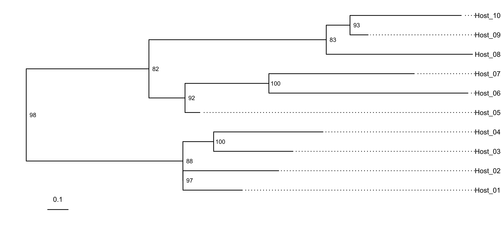
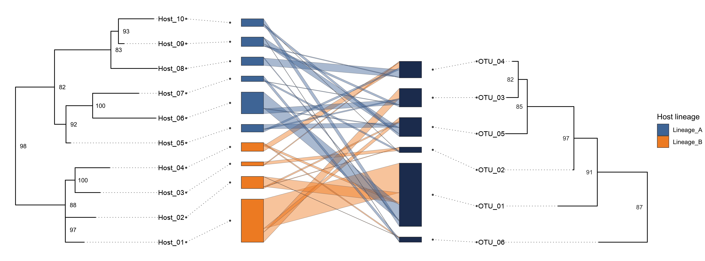
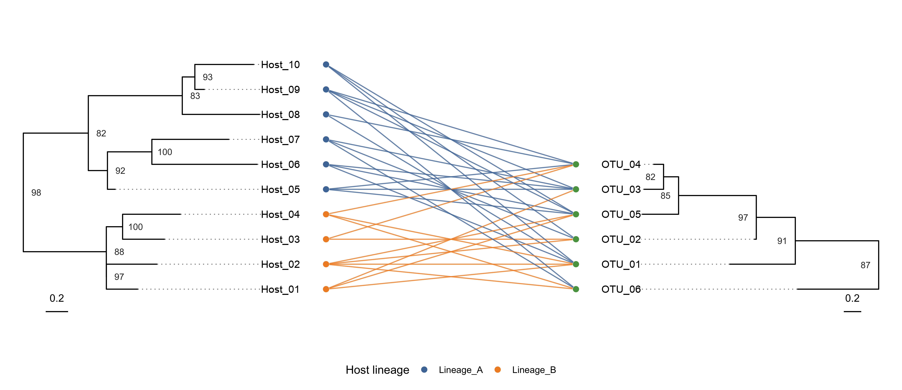
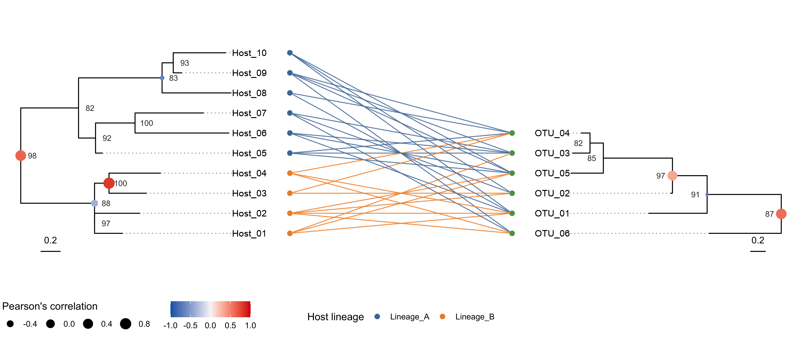

library(tidyverse)
library(cowplot)
library(ape)
library(ggtree)
library(marquee)
library(RPANDA)
library(ggbipartite)ggbipartiteで作るPublishableな系統樹×二者ネットワーク図
この vignette では、ggbipartite と ggtree を組み合わせて、 投稿図として使いやすい品質の図を作る発展例を示します。
扱う内容:
align = TRUEの tip 表示geom_treescale()によるスケール表示geom_nodelab()による bootstrap 値表示marqueeによる tip / node ラベルの文字スタイル統一- abundance 版と binary 版（系統樹スケール維持）の両方
phylosignal_sub_network()結果をgeom_nodepoint()で重ねる例
事前準備
データと系統樹を作る
この章で使う主な関数:
rtree(): 例示用の系統樹を作成します。get_tip_order(): 系統樹と行列の並び順を揃えます。to_longer(): 行列をrow-column-count形式へ変換します。
set.seed(20260304)
host_phylo <- rtree(10)
host_phylo$tip.label <- paste0("Host_", sprintf("%02d", 1:10))
host_phylo$node.label <- sample(70:100, host_phylo$Nnode, replace = TRUE)
symbiont_phylo <- rtree(6)
symbiont_phylo$tip.label <- paste0("OTU_", sprintf("%02d", 1:6))
symbiont_phylo$node.label <- sample(70:100, symbiont_phylo$Nnode, replace = TRUE)
host_order <- get_tip_order(host_phylo) |> rev()
symbiont_order <- get_tip_order(symbiont_phylo) |> rev()
interaction_matrix_raw <- matrix(
c(
120, 0, 40, 0, 15, 0,
40, 2, 0, 0, 6, 1,
0, 12, 0, 4, 0, 0,
8, 0, 0, 22, 0, 5,
0, 0, 5, 8, 18, 0,
65, 0, 20, 0, 3, 0,
0, 7, 2, 0, 0, 13,
4, 0, 0, 30, 0, 0,
0, 0, 8, 3, 25, 2,
20, 1, 0, 0, 10, 0
),
nrow = 10,
byrow = TRUE,
dimnames = list(
paste0("Host_", sprintf("%02d", 1:10)),
paste0("OTU_", sprintf("%02d", 1:6))
)
)
interaction_matrix <- interaction_matrix_raw[
host_order,
symbiont_order,
drop = FALSE
]
metadata_row <- tibble(
host = rownames(interaction_matrix),
host_lineage = c(rep("Lineage_A", 6), rep("Lineage_B", 4))
)
metadata_row# A tibble: 10 × 2
host host_lineage
<chr> <chr>
1 Host_10 Lineage_A
2 Host_09 Lineage_A
3 Host_08 Lineage_A
4 Host_07 Lineage_A
5 Host_06 Lineage_A
6 Host_05 Lineage_A
7 Host_04 Lineage_B
8 Host_03 Lineage_B
9 Host_02 Lineage_B
10 Host_01 Lineage_B metadata_column <- tibble(
symbiont = colnames(interaction_matrix),
guild = c("AMF", "AMF", "ECM", "ECM", "Saprotroph", "Unknown")
)
metadata_column# A tibble: 6 × 2
symbiont guild
<chr> <chr>
1 OTU_04 AMF
2 OTU_03 AMF
3 OTU_05 ECM
4 OTU_02 ECM
5 OTU_01 Saprotroph
6 OTU_06 Unknown interaction_df <- to_longer(interaction_matrix, .rowname = "row") |>
rename(count = interaction) |>
mutate(
row = factor(row, levels = rownames(interaction_matrix)),
column = factor(column, levels = colnames(interaction_matrix))
)
binary_matrix <- (interaction_matrix > 0) * 1L
binary_df <- to_longer(binary_matrix, .rowname = "row") |>
rename(count = interaction) |>
mutate(
row = factor(row, levels = rownames(binary_matrix)),
column = factor(column, levels = colnames(binary_matrix))
)系統樹を注釈する
この章で使う主な関数:
geom_tiplab(align = TRUE): tip ラベルを整列表示します。geom_treescale(): 枝長スケールを図に追加します。geom_nodelab(): 内部ノード bootstrap 値を表示します。
label_family <- "Arial"
tip_text_size <- 3.5
node_text_size <- 3
host_tree_base <- ggtree(host_phylo)
host_tree_span <- diff(range(host_tree_base$data$x, na.rm = TRUE))
host_tree_annotated <- host_tree_base +
geom_tiplab(
align = TRUE,
linetype = "dotted",
family = label_family,
size = tip_text_size
) +
geom_nodelab(
aes(label = label),
node = "internal",
family = label_family,
size = node_text_size,
colour = "black",
nudge_x = host_tree_span * 0.01,
hjust = 0.5
) +
geom_treescale(
x = 0.1,
y = 0,
width = 0.1,
fontsize = tip_text_size,
family = label_family
) +
coord_cartesian(clip = "off")
host_tree_annotated
marqueeでtip/nodeラベルの見た目を揃える
この章で使う主な関数:
adjust_tree(): tree を bipartite ボックスへ整列します。.tiplab_segment_data(): align 用の補助線座標を作ります。.tiplab_marquee_data():geom_marquee()用 tip 座標を作ります。geom_marquee(): tip ラベルを同一フォントで安定描画します。
以降のコードでは、関数を定義せずに各チャンク内で直接 adjust_tree() / geom_marquee() / geom_nodelab() / geom_treescale() を組み合わせます。
abundance版の図を作る
この章で使う主な関数:
construct_bn_coordination(): row / column / interaction 座標を作成します。geom_bipnet_box(): row / column ボックスを描きます。geom_bipnet_interaction(): abundance ポリゴンを描きます。create_link(): tree と box を結ぶリンク座標を作ります。get_yrange(): パネル間の y 軸を統一します。
gap_abundance <- sum(interaction_matrix) / 12
bn_coords_abundance <- construct_bn_coordination(
.mat = interaction_matrix,
.row = "host",
.column = "symbiont",
.metadata_row = metadata_row,
.metadata_column = metadata_column,
.gap = gap_abundance
)
t_host_abundance_base <- adjust_tree(
.phylo = host_phylo,
.box = bn_coords_abundance$row_box,
.adjust = 1,
.tree_position = "left"
)
x_span_host_abundance <- diff(range(t_host_abundance_base$data$x, na.rm = TRUE))
t_host_abundance <- t_host_abundance_base +
geom_segment(
data = function(df) .tiplab_segment_data(df, offset = 0),
aes(x = x, xend = xend, y = y, yend = yend),
linetype = "dotted",
linewidth = 0.35,
colour = "grey45",
inherit.aes = FALSE
) +
geom_marquee(
data = function(df) .tiplab_marquee_data(df, offset = 0),
aes(x = x_lab, y = y, label = label),
inherit.aes = FALSE,
hjust = 0,
family = label_family,
size = tip_text_size
) +
geom_nodelab(
aes(label = label),
node = "internal",
nudge_x = x_span_host_abundance * 0.05,
hjust = 0.5,
family = label_family,
size = node_text_size
) +
coord_cartesian(clip = "off")
t_symbiont_abundance_base <- adjust_tree(
.phylo = symbiont_phylo,
.box = bn_coords_abundance$column_box,
.adjust = 1,
.tree_position = "right"
)
x_span_symbiont_abundance <- diff(range(t_symbiont_abundance_base$data$x, na.rm = TRUE))
t_symbiont_abundance <- t_symbiont_abundance_base +
geom_segment(
data = function(df) .tiplab_segment_data(df, offset = 0),
aes(x = x, xend = xend, y = y, yend = yend),
linetype = "dotted",
linewidth = 0.35,
colour = "grey45",
inherit.aes = FALSE
) +
geom_marquee(
data = function(df) .tiplab_marquee_data(df, offset = 0),
aes(x = x_lab, y = y, label = label),
inherit.aes = FALSE,
hjust = 1,
family = label_family,
size = tip_text_size
) +
geom_nodelab(
aes(label = label),
node = "internal",
nudge_x = -x_span_symbiont_abundance * 0.05,
hjust = 0.5,
family = label_family,
size = node_text_size,
colour = "grey20"
) +
coord_cartesian(clip = "off")
link_host <- create_link(
box = bn_coords_abundance$row_box,
ggtree = t_host_abundance,
side = "row",
x = 1,
xend = 0
)
link_symbiont <- create_link(
box = bn_coords_abundance$column_box,
ggtree = t_symbiont_abundance,
side = "column",
x = 0,
xend = 1
)
p_link_host <- ggplot(link_host) +
geom_segment(
aes(x = x, y = y1, xend = xend, yend = y2, group = row),
linetype = "dotted",
linewidth = 0.35,
colour = "grey45"
) +
geom_point(aes(x = x, y = y1), size = 0.7, colour = "grey30") +
geom_point(aes(x = xend, y = y2), size = 0.7, colour = "grey30") +
theme_void()
p_link_symbiont <- ggplot(link_symbiont) +
geom_segment(
aes(x = x, y = y1, xend = xend, yend = y2, group = column),
linetype = "dotted",
linewidth = 0.35,
colour = "grey45"
) +
geom_point(aes(x = x, y = y1), size = 0.7, colour = "grey30") +
geom_point(aes(x = xend, y = y2), size = 0.7, colour = "grey30") +
theme_void()
p_abundance_publishable <- ggplot(
interaction_df,
aes(row = row, column = column, count = count)
) +
geom_bipnet_box(
aes(fill = after_stat(host_lineage)),
type = "row",
row_nm = "host",
metadata_row = metadata_row,
gap = gap_abundance,
linewidth = 0.25,
colour = "grey20"
) +
geom_bipnet_box(
type = "column",
gap = gap_abundance,
fill = "#223A5E",
linewidth = 0.25,
colour = "grey20"
) +
geom_bipnet_interaction(
aes(fill = after_stat(host_lineage)),
row_nm = "host",
metadata_row = metadata_row,
gap = gap_abundance,
alpha = 0.45,
linewidth = 0.1,
colour = "grey35",
show.legend = FALSE
) +
scale_fill_manual(
name = "Host lineage",
values = c("Lineage_A" = "#4E79A7", "Lineage_B" = "#F28E2B")
) +
theme_void(base_family = label_family)
legend <- get_legend(p_abundance_publishable)
p_abundance_publishable <- p_abundance_publishable + theme(legend.position = "none")
ylim_abundance <- range(
c(
get_yrange(t_host_abundance),
get_yrange(t_symbiont_abundance),
get_yrange(p_abundance_publishable)
),
na.rm = TRUE
)
scale_y_abundance <- scale_y_continuous(
limits = ylim_abundance,
expand = expansion(mult = 0)
)
t_host_abundance <- t_host_abundance + scale_y_abundance
t_symbiont_abundance <- t_symbiont_abundance + scale_y_abundance
p_link_host <- p_link_host + scale_y_abundance
p_link_symbiont <- p_link_symbiont + scale_y_abundance
p_abundance_publishable <- p_abundance_publishable + scale_y_abundance
t_host_abundance +
p_link_host +
p_abundance_publishable +
p_link_symbiont +
t_symbiont_abundance +
legend +
patchwork::plot_layout(nrow = 1, widths = c(1, 0.28, 1.15, 0.28, 1, 0.2))
binary版の図を作る
この章で使う主な関数:
geom_bipnet_interaction(interaction_type = "binary"): 二値相互作用を線分として描画します。geom_bipnet_point(): row / column ノードを点で描画します。tip_positions_row/tip_positions_column: 系統樹由来の y 座標を直接ネットワークへ適用します。metadata_row+after_stat(host_lineage): binary でも host lineage による色分けが可能です。ggtree(): 枝長スケールを保持した tree パネルを構築します。
host_tip_positions <- ggtree(host_phylo)$data |>
filter(!is.na(.data$isTip) & .data$isTip) |>
transmute(
label = as.character(.data$label),
y = as.numeric(.data$y)
) |>
group_by(.data$label) |>
summarise(y = mean(.data$y), .groups = "drop")
symbiont_tip_positions <- ggtree(symbiont_phylo)$data |>
filter(!is.na(.data$isTip) & .data$isTip) |>
transmute(
label = as.character(.data$label),
y = as.numeric(.data$y)
) |>
group_by(.data$label) |>
summarise(y = mean(.data$y), .groups = "drop")
p_binary_publishable <- ggplot(
binary_df,
aes(row = row, column = column, count = count)
) +
geom_bipnet_interaction(
aes(colour = after_stat(host_lineage)),
interaction_type = "binary",
row_nm = "host",
metadata_row = metadata_row,
tip_positions_row = host_tip_positions,
tip_positions_column = symbiont_tip_positions,
linewidth = 0.5,
alpha = 0.8,
show.legend = FALSE
) +
geom_bipnet_point(
aes(fill = after_stat(host_lineage)),
type = "row",
row_nm = "host",
metadata_row = metadata_row,
tip_positions_row = host_tip_positions,
tip_positions_column = symbiont_tip_positions,
colour = "white",
stroke = 0.2,
size = 2.8
) +
geom_bipnet_point(
type = "column",
tip_positions_row = host_tip_positions,
tip_positions_column = symbiont_tip_positions,
fill = "#59A14F",
colour = "white",
stroke = 0.2,
size = 2.8
) +
scale_colour_manual(
values = c("Lineage_A" = "#4E79A7", "Lineage_B" = "#F28E2B"),
guide = "none"
) +
scale_fill_manual(
values = c("Lineage_A" = "#4E79A7", "Lineage_B" = "#F28E2B"),
name = "Host lineage"
) +
theme_void(base_family = label_family) +
theme(
plot.margin = margin(5.5, 15, 5.5, 15),
legend.position = "bottom"
)
t_host_binary_base <- ggtree(host_phylo)
x_span_host_binary <- diff(range(t_host_binary_base$data$x, na.rm = TRUE))
t_host_binary <- t_host_binary_base +
geom_segment(
data = function(df) .tiplab_segment_data(df, offset = 0),
aes(x = x, xend = xend, y = y, yend = yend),
linetype = "dotted",
linewidth = 0.35,
colour = "grey45",
inherit.aes = FALSE
) +
geom_marquee(
data = function(df) .tiplab_marquee_data(df, offset = 0),
aes(x = x_lab, y = y, label = label),
inherit.aes = FALSE,
hjust = 0,
family = label_family,
size = tip_text_size
) +
geom_nodelab(
aes(label = label),
node = "internal",
nudge_x = x_span_host_binary * 0.05,
hjust = 0.5,
family = label_family,
size = node_text_size,
colour = "grey20"
) +
geom_treescale(
x = 0.2,
y = 0.1,
width = 0.2,
fontsize = tip_text_size,
family = label_family
) +
coord_cartesian(clip = "off")
t_symbiont_binary_base <- ggtree(symbiont_phylo)
x_span_symbiont_binary <- diff(range(t_symbiont_binary_base$data$x, na.rm = TRUE))
t_symbiont_binary <- t_symbiont_binary_base +
geom_segment(
data = function(df) .tiplab_segment_data(df, offset = 0),
aes(x = x, xend = xend, y = y, yend = yend),
linetype = "dotted",
linewidth = 0.35,
colour = "grey45",
inherit.aes = FALSE
) +
geom_marquee(
data = function(df) .tiplab_marquee_data(df, offset = 0),
aes(x = x_lab, y = y, label = label),
inherit.aes = FALSE,
hjust = 1,
family = label_family,
size = tip_text_size
) +
geom_nodelab(
aes(label = label),
node = "internal",
nudge_x = -x_span_symbiont_binary * 0.05,
hjust = 0.5,
family = label_family,
size = node_text_size,
colour = "grey20"
) +
geom_treescale(
x = -0.4,
y = 0.1,
width = 0.2,
fontsize = tip_text_size,
family = label_family
) +
coord_cartesian(clip = "off") +
scale_x_reverse()
ylim_binary <- range(
c(
get_yrange(t_host_binary),
get_yrange(t_symbiont_binary),
get_yrange(p_binary_publishable)
),
na.rm = TRUE
)
scale_y_binary <- scale_y_continuous(
limits = ylim_binary,
expand = expansion(mult = 0)
)
t_host_binary <- t_host_binary + scale_y_binary
t_symbiont_binary <- t_symbiont_binary + scale_y_binary
p_binary_publishable <- p_binary_publishable + scale_y_binary
t_host_binary +
p_binary_publishable +
t_symbiont_binary +
patchwork::plot_layout(nrow = 1, widths = c(1, 1.2, 1))
binary + RPANDAシグナルを重ねる（geom_nodepoint()）
この章で使う主な関数:
phylosignal_sub_network(): clade 単位の相関検定を実行する関数（本章では実行せず参照のみ）。tribble(): デモ用の clade シグナル表をコード内で直接作成します。geom_nodepoint(): 検定結果（mantel_cor）を内部ノードへ重ね描きします。
# Example call (not executed):
# phylosignal_sub_network(
# network = binary_matrix,
# tree_A = host_phylo,
# tree_B = symbiont_phylo
# )
cophylo_by_clade_plants <- tribble(
~data_source, ~node, ~nb_A, ~nb_B, ~mantel_cor, ~pvalue_upper, ~pvalue_lower, ~pvalue_upper_corrected, ~pvalue_lower_corrected,
"ecm_erm", 11, 5, 4, 0.62, 0.0010, 0.2400, 0.0040, 0.4400,
"ecm_erm", 12, 4, 3, -0.38, 0.0120, 0.4100, 0.0300, 0.6500,
"ecm_erm", 14, 6, 5, 0.81, 0.0005, 0.1900, 0.0020, 0.3300,
"ecm_erm", 16, 3, 2, 0.25, 0.0800, 0.5000, 0.1200, 0.7700,
"rus", 15, 4, 4, -0.55, 0.0300, 0.0100, 0.0700, 0.0300,
"ecm_erm", 18, 2, 2, -0.67, 0.0020, 0.6600, 0.0060, 0.8900
)
cophylo_by_clade_plants_sigif_upper <- cophylo_by_clade_plants |>
filter(
data_source == "ecm_erm",
pvalue_upper_corrected < 0.05
)
cophylo_by_clade_plants_sigif_upper# A tibble: 4 × 9
data_source node nb_A nb_B mantel_cor pvalue_upper pvalue_lower
<chr> <dbl> <dbl> <dbl> <dbl> <dbl> <dbl>
1 ecm_erm 11 5 4 0.62 0.001 0.24
2 ecm_erm 12 4 3 -0.38 0.012 0.41
3 ecm_erm 14 6 5 0.81 0.0005 0.19
4 ecm_erm 18 2 2 -0.67 0.002 0.66
# ℹ 2 more variables: pvalue_upper_corrected <dbl>,
# pvalue_lower_corrected <dbl>cophylo_by_clade_fungi <- tribble(
~data_source, ~node, ~nb_A, ~nb_B, ~mantel_cor, ~pvalue_upper, ~pvalue_lower, ~pvalue_upper_corrected, ~pvalue_lower_corrected,
"ecm_erm", 7, 4, 4, 0.58, 0.0040, 0.2000, 0.0100, 0.3100,
"ecm_erm", 8, 3, 3, -0.71, 0.0008, 0.5000, 0.0030, 0.8000,
"ecm_erm", 9, 2, 2, 0.33, 0.0300, 0.4100, 0.0490, 0.7500,
"ecm_erm", 10, 2, 2, 0.12, 0.2000, 0.6000, 0.2900, 0.8800,
"rus", 11, 2, 3, -0.47, 0.0400, 0.0300, 0.0900, 0.0500
)
cophylo_by_clade_fungi_sigif_upper <- cophylo_by_clade_fungi |>
filter(
data_source == "ecm_erm",
pvalue_upper_corrected < 0.05
)
cophylo_by_clade_fungi_sigif_upper# A tibble: 3 × 9
data_source node nb_A nb_B mantel_cor pvalue_upper pvalue_lower
<chr> <dbl> <dbl> <dbl> <dbl> <dbl> <dbl>
1 ecm_erm 7 4 4 0.58 0.004 0.2
2 ecm_erm 8 3 3 -0.71 0.0008 0.5
3 ecm_erm 9 2 2 0.33 0.03 0.41
# ℹ 2 more variables: pvalue_upper_corrected <dbl>,
# pvalue_lower_corrected <dbl>cor_limits <- range(
c(
cophylo_by_clade_plants_sigif_upper$mantel_cor,
cophylo_by_clade_fungi_sigif_upper$mantel_cor
),
na.rm = TRUE
)
if (diff(cor_limits) == 0) {
cor_limits <- cor_limits + c(-1e-6, 1e-6)
}
common_scale <- list(
scale_color_gradient2(
name = NULL,
low = "#0568b3",
mid = "#F7F7F7",
high = "#d60205",
midpoint = 0,
limits = c(-1, 1),
breaks = c(-1, -0.5, 0, 0.5, 1)
),
scale_size(
name = "Pearson's correlation",
range = c(1, 5),
limits = cor_limits
)
)
t_host_binary_signal <- t_host_binary %<+%
cophylo_by_clade_plants_sigif_upper +
geom_nodepoint(aes(size = mantel_cor, colour = mantel_cor)) +
common_scale +
theme(
legend.position = "bottom",
legend.title.position = "top"
)
t_symbiont_binary_signal <- t_symbiont_binary %<+%
cophylo_by_clade_fungi_sigif_upper +
geom_nodepoint(aes(size = mantel_cor, colour = mantel_cor)) +
common_scale +
theme(legend.position = "none")
t_host_binary_signal +
p_binary_publishable +
t_symbiont_binary_signal +
patchwork::plot_layout(nrow = 1, widths = c(1, 1.2, 1))
出力時の実務メモ
この章で使う主な関数:
ggsave(): 論文図として保存します。device = cairo_pdf: 文字埋め込みや線描画を安定化できます。
ggsave(
filename = "plots/network.pdf",
plot = p_otu_composition,
device = grDevices::cairo_pdf,
width = 9.6,
height = 7.2,
units = "in",
limitsize = FALSE,
bg = "transparent"
)